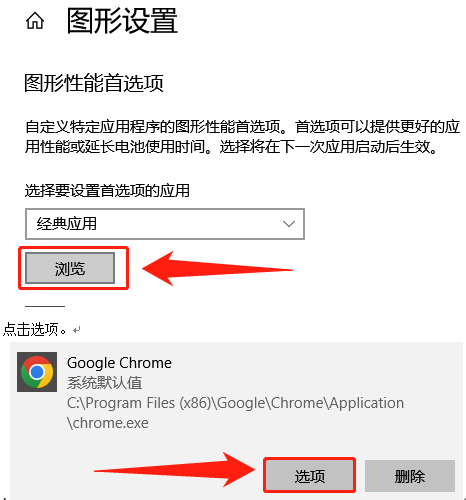

浏览器如何使用GPU
查看浏览器显卡
确保您的浏览器正在使用高性能显卡(如认证和派生配置网站上的文档所示)要验证浏览器使用的GPU取决于你的浏览器: 它应该与您的认证GPU匹配。
- 【Firefox】浏览器:在地址栏中输入about:support，搜索WebGL 1 Driver Renderer
- 【Chrome】浏览器:在浏览器地址栏中输入Chrome://gpu/，搜索GL_RENDERER Chrome
控制面板
如果在Windows 10上使用英特尔GPU(当您同时拥有集成和分立GPU时发生这种情况)，请执行以下操作:
a. 打开显示设置面板(右键单击桌面)。
b. 点击图形设置。
单击Browse并选择浏览器可执行文件的路径。里谷歌浏览器为例:C:\Program Files\Google\Chrome\ Application\chrome.exe)在图形设置里选择“高性能GPU”。
注册表
你也可以要求你的管理员修改Windows注册表:
1 | HKEY_CURRENT_USER\Software\Microsoft\DirectX\UserGpuPreferences |
在UserGpuPreferences项里，右键单击选择新建New > String Value。
名称：输入浏览器可执行程序<文件路径>
数值：GpuPreference=2